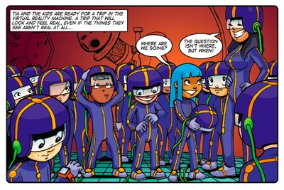
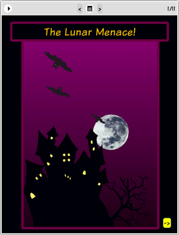

Story: The Lunar Menace
Theme: Testing your inferences.
Synopsis
In “The Lunar Menace” the Thunderbolt Kids use a virtual reality machine to explore how people in different times and places have thought about the moon. They visit the Apollo moon landing. They visit Copernicus and Galileo. And they visit ancient China. When they reach medieval Transylvania and chance upon a mythical werewolf Farrah is frightened senseless. Over the next few days some of the other learners take delight in scaring Farrah, who can’t seem to shake off her fear of werewolves. Eventually she comes to the realisation that there is a difference between fact and fiction or science and superstition. And she resolves to treat scary situations more sceptically. Later, when a werewolf storms into her room she realises it’s a trick and introduces the two kids in the werewolf costumes to her baseball bat.
The times and places visited in the virtual reality machine introduce two fundamentally different ways of thinking about the moon: the way of science; and the way of superstition. This mirrors two fundamentally different ways of thinking about anything we’re confronted with in our daily lives: thinking sceptically or thinking naively and magically. Thinking sceptically doesn’t mean disbelieving everything. It simply means testing the ideas we encounter rather than blindly accepting as true whatever information we’re exposed to.
Activity: The Moon Experiment
This Moon Experiment explains how to set up an activity in the classroom where learners can see for themselves how light coming from a single source (such as a powerful torch or lamp) lights up only one side of a ball. When they look at the ball they sometimes see the whole illuminated face, sometimes half of it, sometimes a quarter, and sometimes only the dark side. Just like the phases of the moon.
This activity brings phases of the moon into the classroom in a memorable way. But the purpose of this exercise is not simply to provide a memorable activity. The purpose is to have learners test the claims in the science textbook by conducting an experiment for themselves. The ideas about the moon in a science textbook should never be introduced in the way that children once learned magical ideas about the moon. If we introduce scientific ideas to learners in the same way that people hundreds of years ago introduced magical ideas about the moon, then we really aren’t providing them with a role model of critical, analytical or scientific thinking. A textbook is not a holy book that must be accepted as the final word. A science textbook should not be treated as dogma to be learned faithfully by heart and never questioned. We want learners to question the claims made in their science textbooks. We want them to think of ways of confirming the claims in their textbooks though activities and experiments.

The eToys project: The Lunar
MenaceIn this project learners follow Tom’s instructions and build an animation showing the phases of the moon. This is the first time that learners are introduced to animation in eToys. In addition to Tom’s animation of the phases of the moon, the splash page includes animated bats and a castle with flickering lights. The moon on the splash page also moves. The intention behind this splash page is to show learners that the animation technique they learn in the project is the same animation technique used to create the bats. This is important because it carries the message that the serious content of a Kusasa lesson can be used for fun, self-expressive, entertaining purposes.